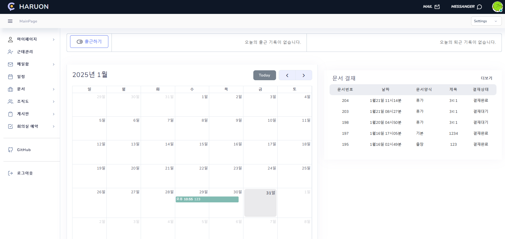
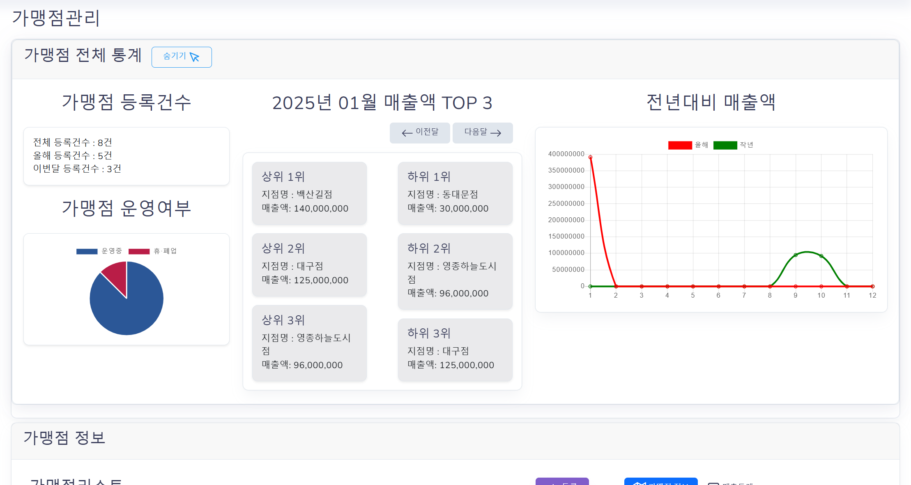

파이널 프로젝트 2025.01.06 ~ 2024.02.14
Github ERD 프로젝트 배포 DEMO 프로젝트 시연영상(유튜브)
프랜차이즈 그룹웨어
 
개발 인원 : 5명
팀원과 협업하여 진행한 최종 팀 프로젝트입니다.
온라인 프랜차이즈 그룹웨어 시스템을 설계하고 구현하였습니다.
기본적인 인트라넷 기능 외에도 가맹점 매출 보고서, 교육 일정 관리,
가맹점 문의 기능을 추가하여 프랜차이즈 운영 시스템을 완성했습니다.
두번째로 하는 팀 프로젝트였던 만큼 지난 프로젝트에서 부족했던 기술적 부분을 보완하여
프로젝트의 완성도를 높였습니다.
Function
사원 등록, 로그인 및 사용자 관리, 근태 관리, 일정 및 캘린더 관리,
사원 마이페이지 조회 및 수정, 전자결재 시스템, 게시판 기능, 가맹점 관리,
조직도 및 직원 관리, 회의실 예약 시스템 등이 있습니다.
담당 업무
[결재 문서]
- 기본, 매출보고서, 휴가신청서, 출장신청서 총 4개의 기안서 작성 폼 구현
- 기안 작성 시, 모달 창을 통해 중간결재자/최종결재자/수신참조자 선택 가능
- 기안 제출 후 결재대기 상태에서 수정 및 삭제 가능
- 결재문서 수정·삭제 시, 서비스 레이어에서 유효성 검증을 수행하여 본인이 아닐 경우 로그인 페이지로 리다이렉트 처리
- 결재문서에서 기안자가 설정한 결재라인 및 참조자만 열람 가능하도록 권한 검증 메서드 구현
- 결재자가 서명 미등록 시, 알림 창을 띄우고 마이페이지에서 전자결재 이미지 등록하도록 처리
- 결재 완료 후 PDF 파일로 다운로드 가능
- 결재 완료 시, 일정에 자동 등록하여 업무 일정과 연동
- 결재 목록 및 참조 리스트 관리를 효율적으로 하기 위해
Datatables 라이브러리와 AJAX를 활용하여 리스트 페이지 구현
페이징, 검색 기능 추가로 사용자 편의성 향상
[신규 사원등록]
- 사원 등록 시 JavaMailSender를 활용하여 이메일 발송 구현.
- Spring Security로 로그인 하여 권한·인증 처리
- 데이터베이스에 새로운 사원 등록 시 중복 여부 확인 및 유효성 검증 로직 구현.
[마이페이지]
- MultipartFile을 활용한 프로필 이미지 업로드·삭제 기능 구현
- 사원 정보 실시간 수정 기능 및 전자결재용 서명 이미지 관리 기능 추가
- Spring Security 컨텍스트 실시간 업데이트를 통한 프로필 변경 즉시 반영 구현
- 로그아웃 없이 전체 애플리케이션에서 변경된 프로필 정보 즉시 적용
- 보안 컨텍스트 갱신으로 사용자 정보 일관성 및 보안성 강화
[일정 관리]
- FullCalendar.js와 REST API를 활용해 달력에 일정 표시.
- 일정 페이지에서 AJAX 통신을 통해 서버에서 실시간으로 불러와 달력에 표시.
- 사용자가 새 일정을 추가할 수 있는 기능 제공
- 일정 상세보기 페이지에서 수정 , 삭제 기능
구현 과정에서 겪은 문제해결 및 개선사례
1. 마이페이지 프로필 실시간 반영 이슈
프로필 업데이트 후 오른쪽 상단의 프로필 이미지가 새로고침이나 재로그인 없이 변경 사항이 즉시 반영되지 않는 문제가 발생했습니다.
이를 해결하기 위해 웹소켓을 통한 실시간 통신과 시큐리티 컨텍스트 업데이트 방식 두 가지 방법을 검토했습니다.
1) 웹소켓 방식: 실시간 반영에 적합하지만, 구현 난이도가 높고 서버 리소스 사용량 증가로 인해 효율적인 해결책이라고 판단하기 어려웠습니다.
2) 시큐리티 컨텍스트 업데이트 방식: 기존 인증 시스템과의 통합이 용이하고 서버 부담이 적습니다.
해결 및 개선 :
기존 보안 및 세션 관리 체계와의 일관성을 유지하기 위해 Spring Security 컨텍스트 업데이트 방식을 선택했습니다.
GITHUB 코드 보러가기
시큐리티 컨텍스트 동기화: 프로필 정보 업데이트 시 SecurityContextHolder에서 현재 사용자의 인증 객체를 재생성하여 변경된 정보를 즉시 반영하도록 구현했습니다.
DB 와 세션 데이터 일관성 강화: DB에 반영된 최신 프로필 정보를 조회한 후 인증 객체에 갱신된 데이터를 설정하여, 세션과 DB 간 데이터 불일치 문제를 방지했습니다.
리소스 절약: 웹소켓 도입 없이 기존 인증/권한 관리 인프라를 활용해 불필요한 리소스 소비를 최소화했습니다.
장점 :
즉각적인 UI 반영: 프로필 변경 사항이 새로고침 없이 모든 페이지에 즉시 반영됩니다.
보안성 유지: 별도의 실시간 통신 채널 없이 세션 기반 데이터 동기화 방식으로 안전성을 확보했습니다.
경량화 솔루션: 추가 라이브러리 도입 없이 기존 Spring Security 인프라만으로 구현했습니다.
개선점 :
캐시 최적화: 브라우저 캐시로 인해 갱신된 이미지가 바로 반영되지 않는 문제를 방지하기 위해 이미지 URL에 타임스탬프 또는 랜덤 파라미터를 추가해 캐시를 무효화하는 방식이 필요했습니다.
세션 갱신 범위 최적화: 현재 프로필 이미지를 변경할 때, 이미지만 변경하는것이 아닌 사용자 정보를 갱신하고 있어 불필요한 데이터까지 함께 재생성되는 비효율성이 존재합니다.
향후 이 부분을 개선하여 불필요한 데이터 재생성을 방지하고, 시스템 성능을 최적화할 필요가 있습니다.
2. 결재문서 상세보기 - 권한 검증 & 보안
결재문서 상세보기 페이지에서 결재 라인, 참조자, 그리고 해당 팀의 부서장만 문서를 열람할 수 있도록 구현해야 했습니다.
하지만, 권한이 없는 사용자가 URL을 직접 입력해 접근하려고 할 경우를 어떻게 차단할지 고민이 있었습니다.
단순히 본인만 볼 수 있는 결재문서는 Spring Security 에서 세션 정보를 이용해 확인할 수 있었지만,
부서장, 중간/최종 결재자, 참조자 등 다양한 역할별로 접근 권한을 부여해야 하는 상황에서 어떻게 구현할지 고민이 컸습니다.
해결 및 개선 :
이 문제를 해결하기 위해 Access 메서드를 별도로 구현하여, 현재 로그인된 사용자의 역할(Role) 및 PK를 조회하고, 해당 문서에 접근 가능한 사용자 목록과 비교하도록 처리했습니다.
Access GITHUB 코드 보러가기
이를 통해, 접근 권한이 있는 사용자만 상세보기를 허용하고, 권한이 없는 사용자가 URL 을 직접 입력해 접근을 시도할 경우 차단하도록 구현했습니다.
장점:
신뢰성 있는 사용자 인증:
Spring Security의 SecurityContextHolder를 활용하여 현재 사용자의 인증 정보와 권한을 안전하게 가져온 뒤 DB에서 조회한 데이터와 비교함으로써 무단 접근을 효과적으로 차단했습니다..
명확한 역할 기반 접근 제어:
부서장, 중간 결재자, 최종 결재자, 참조자 등 각 역할에 따른 접근 권한을 개별 메서드로 구분하여 처리함으로써, 구체적이고 세밀한 권한 검증이 가능해했습니다.
URL 직접 입력에 대한 방어:
권한이 없는 사용자가 URL을 직접 입력하여 접근하려고 하는 상황을 미리 차단할 수 있도록, 필요한 권한을 충족하지 않으면 상세보기 페이지에 도달할 수 없도록 하여 보안을 강화했습니다.
모듈화된 승인 검증:
결재 과정의 각 단계(중간, 최종, 반려)에 대해 독립적인 유효성 검사 메서드를 구현하여 각 승인 단계별 검증 로직을 체계적으로 관리할 수 있게 했습니다.
승인 로직 GITHUB 코드 보러가기
3. 결재 문서 목록 로딩 속도 개선
프로젝트 초기에 결재 문서 누적에 대비하고자, 테스트 환경에서 약 5,000건 이상의 더미 데이터를 생성해 로딩 속도를 확인했습니다.
초기에는 DataTables 라이브러리를 기본 설정인 클라이언트 사이드렌더링(CSR) 을 사용했는데 모든 데이터를 한 번에 로딩해야 해서 성능이 급격히 떨어졌습니다.
데이터가 늘어날수록 브라우저가 처리해야 할 양이 기하급수로 증가했고 서버가 대용량 JSON을 한꺼번에 보내느라 응답 지연이 발생했습니다.
해결 및 개선 :
이 문제를 해결하기 위해 Datatables 라이브러리의 기능을 검색하여 AJAX를 활용해 커스텀으로 페이징 및 검색을 처리할 수 있는 방법을 찾았습니다.
Mapper에서 페이징 처리와 검색 기능 쿼리를 추가한 후 서버에서 필요한 데이터만 가져오도록 개선하여 수정한 결과, 평균 3초 이상 걸리던 로딩 시간이 1초 이하로 단축되었으며, 데이터가 늘어나도 안정적으로 처리할 수 있게 되었습니다.
DraftMapper.xml (페이징/검색 & 결재 상세보기 쿼리 포함) 코드
장점 :
페이징 속도 향상: 클라이언트에서 전체 데이터를 보관·렌더링하는 부담이 사라지고 로딩 시간이 약 2~3초 → 1초 이하로 단축되었습니다(테스트 기준).
클라이언트 성능 최적화: 서버에서 데이터를 미리 정제한 후 전송하므로, 브라우저가 대량 데이터를 관리할 필요 없이 적은 리소스로도 원활하게 작동할 수 있습니다.
확장성 증가: 데이터가 많아질수록 기존 방식은 성능 저하가 심했지만, 서버에서 직접 페이징 및 검색을 처리하므로 데이터량이 증가해도 원활한 처리가 가능합니다.
4. 결재문서 작성 폼 방식 결정 및 최적화
결재 문서를 작성할 때, 각 유형별로 개별 페이지를 만들어야 할지
아니면 한 페이지에서 유형을 선택하면 필요한 항목만 동적으로 표시하도록
구현해야 할지 고민이 있었습니다.
해결 및 개선 :
유형별 공통 항목이 많다는 점을 고려하여, 한 페이지에서 유형을 선택하면
필요한 값만 표시하고 나머지는 숨기는 방식을 선택했습니다.
숨겨진 부분의 내용은 초기화하여 불필요한 데이터가 전달되지 않도록 처리했습니다.
최종적으로, 각 유형별로 입력된 데이터를 분리하여 DB에 저장되도록 설계했습니다.
결재작성 페이지 코드 보러가기
장점 :
한 페이지에서 유형별 폼을 관리하므로 새로운 유형이 추가될 경우
페이지 이동 없이 직관적으로 폼을 작성할 수 있습니다.
공통 필드와 개별 필드의 검증을 분리하여 처리할 수 있습니다.
숨겨진 필드의 데이터를 초기화하여 불필요한 정보가 저장되는 것을 방지하고,
필요한 데이터만 서버로 전송되도록 최적화할 수 있습니다.
개선점 :
유형별 입력 항목이 많아지면 가독성이 떨어질 가능성이 있으며
유형이 많아질수록 한 페이지 내에서 개별 필드의 검증이 증가하는 문제가 발생할 수 있습니다.
유형을 변경할 때 필요하지 않은 필드 값이 그대로 남아있어
잘못된 데이터가 포함될 가능성이 있습니다.
이 문제를 해결하기 위해, 컨트롤러에서 공통 필드 값에 대한 기본적인 검증을 수행한 후
서비스 레이어에서는 각 유형별 필수 입력 값만 체크하여
불필요한 데이터 입력을 최소화하고 데이터 무결성을 지켰습니다.
매퍼에서 INSERT 시 DTO에 포함된 불필요한 데이터가 들어가도 자동으로 필터링되도록 처리하여,
잘못된 데이터가 DB에 저장되는 것을 방지했습니다.
5. 반복적인 URL 매핑 구조 개선
결재 문서 리스트를 구현할 때, 처음에는 각 결재 문서 유형별로 URL을 다르게 설정하고
이를 각각 @GetMapping으로 매핑하여 상세보기 페이지로 이동하도록 구현했습니다.
그러나 이 방식은 반복되는 코드가 많아 유지보수에 어려움이 있었습니다.
첫 번째 문제 : 새로운 결재 유형이 추가될 때마다 컨트롤러에서 별도의 매핑을 추가해야 한다는 점이었습니다.
두 번째 문제 : 각 유형별 메서드에서 결재 첨부파일을 불러오는 코드가 반복되어 코드의 가독성과 유지보수성이 떨어지는 점이었습니다.
해결 및 개선 :
이러한 문제를 해결하기 위해 URL을 @PathVariable을 활용하는 방식으로 리팩토링했습니다.
결재 문서의 유형과 해당 문서의 PK 번호를 URL에 포함시켜
단일 @GetMapping에서 모든 유형을 처리할 수 있도록 변경했습니다.
이를 통해 각 문서 유형을 별도로 매핑할 필요 없이 URL 자체로 문서 유형을 식별하면서도
유지보수가 용이한 고유한 URL을 가질 수 있도록 개선했습니다.
GITHUB 코드 보러가기
개선점 :
URL 만으로 문서 유형을 식별할 수 있도록 설계했지만, 이 프로젝트를 처음 접하는 사람들도
쉽게 이해할 수 있도록 직관적인 URL 구조를 고려했어야 한다고 생각합니다.
현재는 공통 코드(ex: C01, C02)를 URL 주소로 사용하다 보니
URL 자체만으로는 어떤 문서의 상세보기인지 쉽게 파악하기 어려운 문제가 있습니다.
공통 코드의 description 컬럼이 한글로 저장되어 있어
이를 직접 URL에 적용하는 것이 어려웠던 점이 개선이 필요한 부분입니다.
Development Environment
Language: Java17, HTML5, CSS,JavaScript, SQL
Framework: SpringBoot, MyBatis, BootStrap
Library: JSTL, JQuery, Lombok
Database: MySQL
WAS: Tomcat 10.1
OS: Windows, Mac OS
Tools: STS4, MySQLWorkBench8.0, Github
Service Environment
OS: Ubuntu
(22.04)
Platform : AWS Lightsail